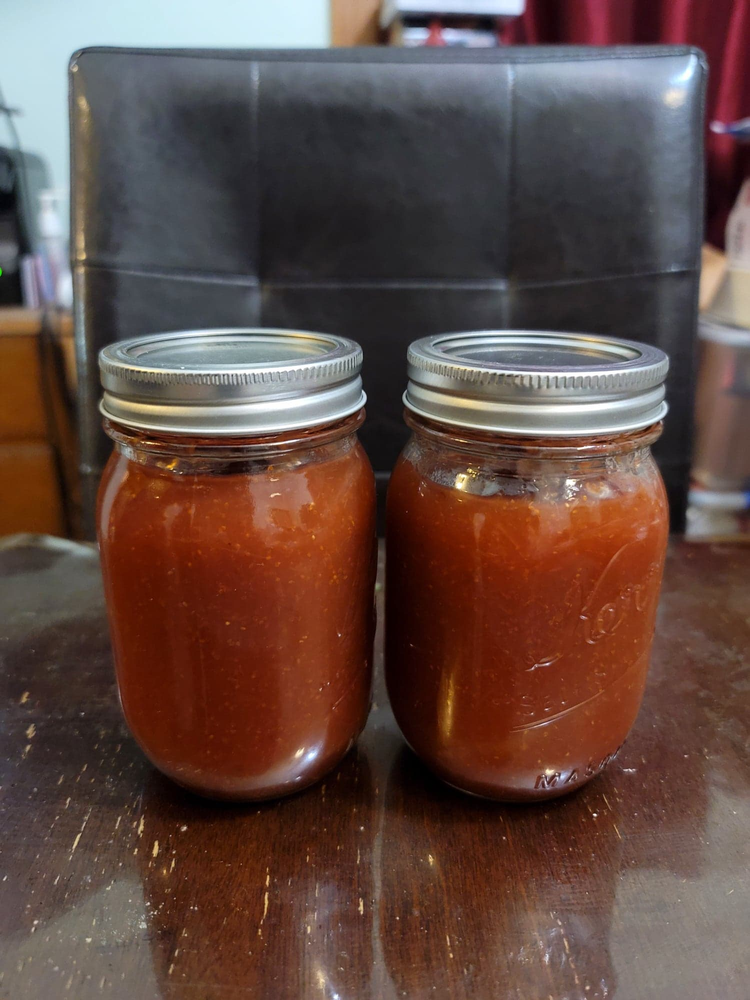

Fig Jam

Ingredients:
- 2 lb Figs, stemmed
- 1 1/2 cup Sugar
- 1 Lemon, juiced
- 1/2 cup Water
Instructions:
- Combine all of the ingredients into a blender. Blend to preference.
- Transfer to a sauce pan over medium-low heat. Whisk constantly while cooking for 20-35 minutes or until thickened to preference, around when the jam runs off the side of a spoon in thick, heavy drops rather than as a stream.
- Either can or store in a fridge. Serve with toast.